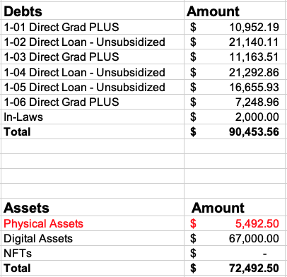
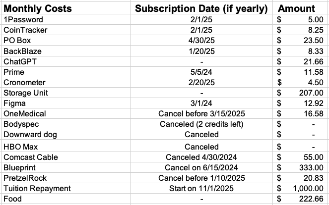
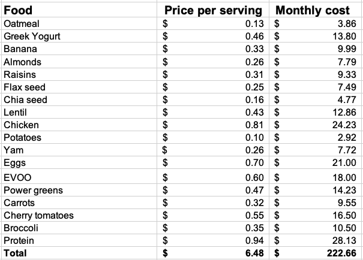

I am at the cusp of significant changes in my life. First, I've decided to leave my PhD program, which was my sole income source. Additionally, my wife and I have started moving into her parent's house. These decision were not made lightly.
Pursuing a PhD requires financial support, and due to the novelty of my project, I found myself juggling a TA position alongside my research. This felt like managing both a full-time and a part-time job while only taking home around $36k annually. The constant financal strain took part in my decision to make a change immediately. I could look for a tech role, which would easily give me a $100k yearly salary, but this would dilute my focus from the entrepreneurshipial journey I have committed myself to.
Our decision to not renew our lease stems from a mutual desire to find our financial footing. We both have student debt and little income. Apartment rent in Seattle is easily over $1k+ for a single room (500 square feet). I did consider finding a way to stay in our apartment if only to make my journey more relatable; however, I want to be a billionaire, and I am willing to do whatever it takes so long as I don't cross my moral boundaries.
Now, let's delve into my strategic approach. I only really need a strategy because of my $90k in students loans. If I did not have these loans, I would, without a doubt, obtain a weekend job and live with my in-laws until one of my business ideas suceeds. Considering that I have $90k in loans and $72k in assets, a more financially conservative or risk averse Francisco would liquidate the assets and work to clear the debt with a year. I am choosing a different path.
I have conviction in the digital assets I hold. Yes, by digital assets, I mean cryptocurrencies. Over the next two years, I think my assets will grow to over $300k, and within five years, my portfolio will grow to over $3 million, at which point I could easily pay off my loans. Thus, I want to delay selling any of my assets. Should the cryptocurrencies start to lose ground in the crypto market, I may consider selling them off if I am still not making any money in my business in one to two years.
As we transition to living with my wife's parents and I step away from formal employment, I need to be more prudent with my finances. I have canceled over seven subscriptions and decided what I would like to try to keep. This tells me I need to make over $1.5k per month or secure $18k to cover a year's expenses. A weekend custodial job only brings in about $1.1k per month, so I will need to be find a way to make $400 a month through my business as soon as possible.
Food expenses, though not the most important recurring cost, is one of the areas I have put a lot of work into. I spend about $222 a month on a unprocessed, healthy, high-protein meal plan. I understand why people complain that eating healthy is expensive, but I realize it just takes quite a bit of time researching. I am still getting adjusted to eating it every day, but I have consistently eaten oatmeal everyday for breakfast for the past month, and this week I have started to eat lentils, potatoes, chicken, and yam for lunch every day. I will vary it up once I build my discipline.
Reflecting further on my stance toward cryptocurrencies, I have read John Woods state crypto is where Windows was in the 90s. What would you do if you knew what you knew now and were sent back to the 90s!? As a builder and entrepreneur, my intention is not merely to speculate but to actively contribute to the ecosystem. By developing applications and services in the field, I get early mover's advantage while growing my portfolio. Meaning, I am not sitting and hoping that my crypto explodes. I will personally drive my crypto up. Otherwise, I think it would be stupid to sit and hope my crypto portfolio will go up since it is a bit riskier in comparison to bitcoin and ethereum.